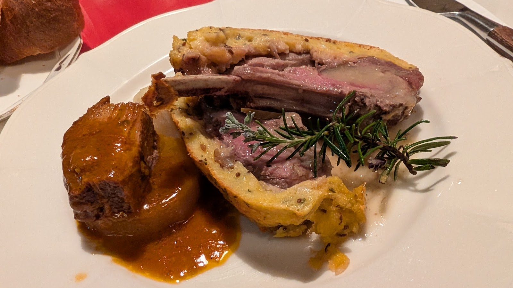
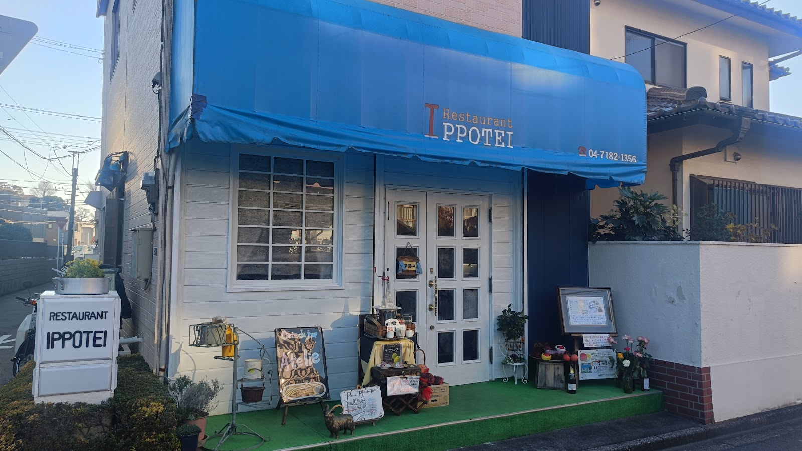
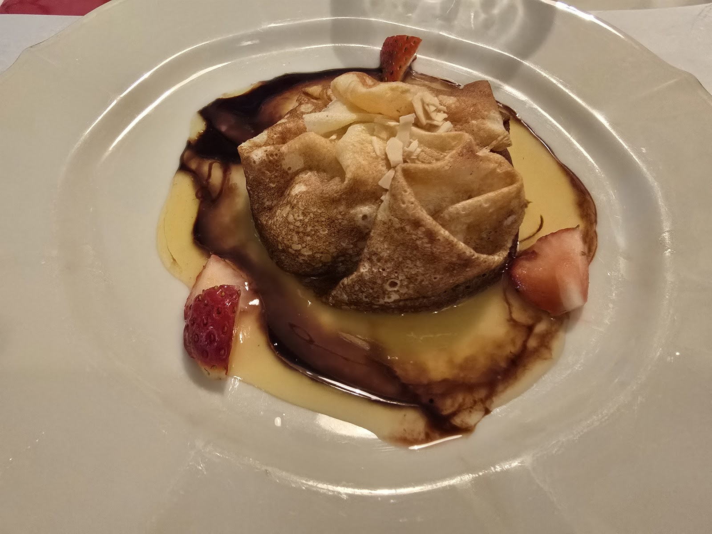

CONCEPT
こだわり
Photo: Den Den（Google マップ）

Photo: GLGL10（Google マップ）
01
盛り付け・仕立てへのこだわり
彩りのバランスや、パイ生地を香ばしく焼き上げる仕立てなど、見た目にも楽しんでいただけるひと皿を心がけています。素材を活かしながら、ひと手間を惜しまない盛り付けで食卓を彩ります。

Photo: Den Den（Google マップ）
02
温かみのある店構え
青いオーニングと白い外壁、緑のテラスが目印の一歩亭。入口には黒板のディスプレイも置かれ、通りがかりでも気軽に立ち寄っていただけるような、開かれた雰囲気を大切にしています。

Photo: Etsu “Kappa” randy（Google マップ）
03
食後まで楽しめるひととき
食事の最後を彩るデザートまで、見た目の華やかさにこだわっています。お食事の締めくくりまで、ゆったりとした時間をお楽しみください。